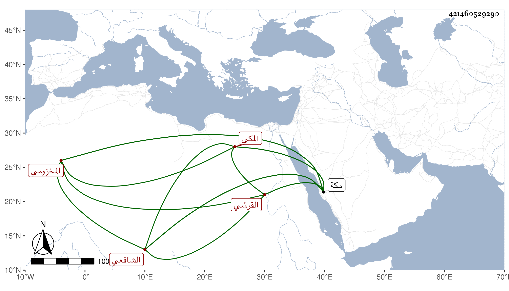

0902Sakhawi.DawLamic.ITO20230111-ara1.EIS1600.421460529290
Biography ID: 421460529290
102
أبو بكر بن عبد الله بن ظهيرة بن أحمد بن عطية بن ظهيرة الفخر القرشي المخزومي المكي الشافعي أخو الجمال محمد ويسمى ظهيرة وهو جد اللذين قبله . ولد سنة خمس وخمسين وسبعمائة بمكة وسمع بها من العز بن جماعة تساعياته الأربعين وغيرها ومن الجمال بن عبد المعطي واليافعي وآخرين منهم التقي البغدادي والبهاء بن عقيل وأجاز له الصلاح العلائي وابن رافع والبهاء بن خليل وابن القاري وعمر بن النقبي وأحمد بن النجم وابن الهبل وابن أميلة والصلاح بن أبي عمر | ذكره التقي بن فهد في معجمه وقال شيخنا في أنبائه أنه اشتغل قليلا ومات في جمادى الأولى سنة اثنتى عشرة بمكة وبيض له الفاسي في تاريخه .
